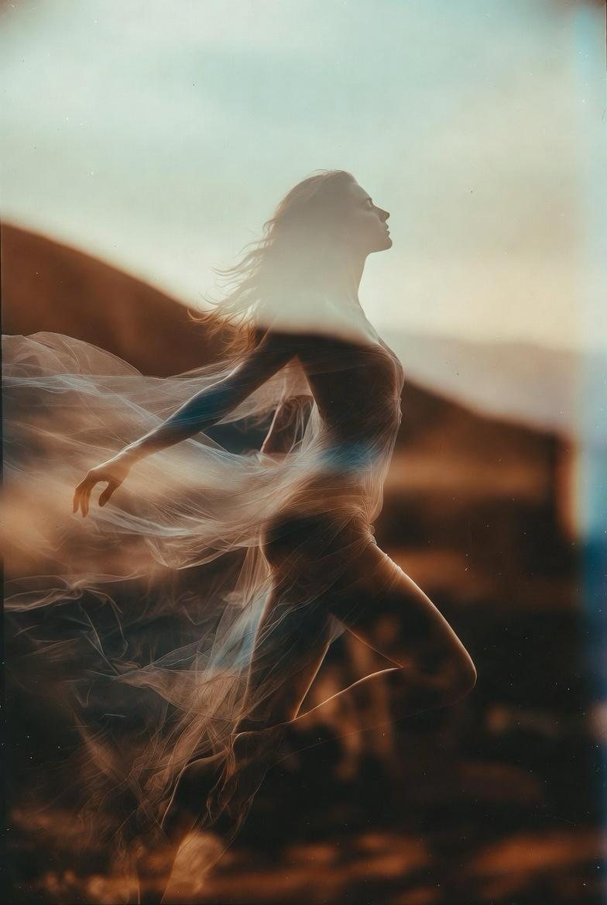

ANARAH is een veld van herinnering. Een plek waar lichaam, ziel en bewustzijn opnieuw op één lijn komen. Het nodigt je uit om terug te keren naar je innerlijke wijsheid. Te leven vanuit aanwezigheid en helderheid. Jouw waarheid. Je rauwe, ongepolijste essentie. Kies voor wat je bezielt, laat los wat je klein houdt. Zonder strijd, zonder schuld. In waarheid. Belichaming in zijn hoogste vorm.
'Who looks outside, dreams. Who looks inside, awakes'
ANARAH beoogt belichaming van je ware essentie. Geen ontsnapping, maar aanwezigheid. Geen performance, maar waarheid in beweging.
Via klank, geur en beweging wordt het lichaam geopend als ingang. Niet om iets toe te voegen, maar om te onthullen wat er al is. Wat vastzit mag verzachten. Wat onderdrukt werd, krijgt ruimte. Wat waar is, wordt voelbaar.
In dit veld word je uitgenodigd om te vertragen, te zakken onder het denken en te bewegen vanuit een diepere intelligentie. Niet gestuurd door hoe het hoort, maar gedragen door wat klopt.
ANARAH is geen methode. Het is een ervaring. Een terugkeer naar de essentie die altijd aanwezig was.
